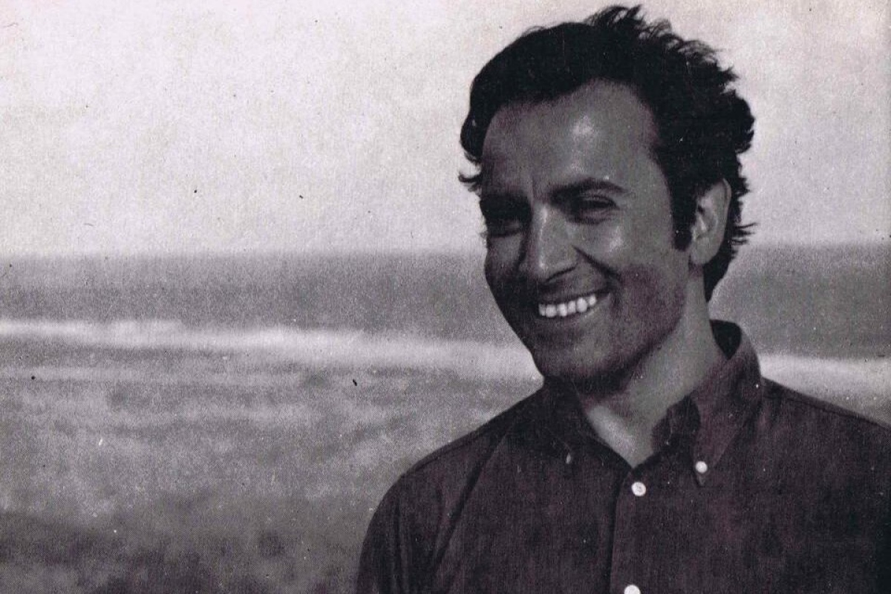

Una sonrisa rupturista

La galería fotográfica de la literatura argentina no es demasiado pródiga en sonrisas. Abundan sí gestos reconcentrados, miradas aviesas y hasta algún rictus trágico. De ahí que entre tanta pose severa o incómoda ante la cámara, resalta sin proponérselo la risa desembozada de Manuel Puig.
Graciela Speranza
En 1956, a los 23 años, Manuel Puig deja el puerto de Buenos Aires con una beca para estudiar en el Centro Sperimentale di Cinematografia de Roma. Durante lo seis años de esta intensa experiencia europea, envía a su familia 172 cartas - firmadas con el apodo de Coco - en las que ya se evidenvia la maestría narrativa de sus futuras novelas.
Roma, martes 2 de enero de 1962
Querida familia: Se me pasaron los días sin querer. Es un escándalo cómo pasa el tiempo, con las fiestas se me enredó todo. Por suerte ya pasaron, bastante bien todo. Para Navidad con las Muzi y Fenelli, para Fin de año una fiesta muy linda, internacional, en casa de un esxcritor muy agradable. Mario D´Amico.
Manuel Puig nació en General Villegas en 1932. Murió en Cuernavaca, México, el 22 de julio de 1990. Pasó su niñez en la calma de este pueblo mientars la guerra destruía parte del mundo. Este contraste influyó en su percepción de las personas. En alguno de los reportajes dijo que en su adolescencia tuvo claro que las personas se dividen en dos grandes grupos: las violentas y las débiles; una suerte de activo y pasivo en correspondencia con masculino y femenino. Esta visión de la humanidad problematizó toda su vida, con el tiempo se unirá al Frente de Liberación Homosexual. Siempre fue reconocido en el mundo por su escritura desenfadada y comprometida. En 1982 fue nominado al premio Nobel de Literatura, luego que en Estocolmo se representara la adaptación teatral de El beso de la mujer araña.
Boquitas pintadas
Bouitas azules, violáceas, negras - décima entrega
El beso de la mujer araña
Este fragmento pertenece al capítulo 9 y parte del 10 de la novela Boquitas Pintadas. Molina narra la película "Caminé con un zombie". En esta novela narra otras películas: "La mujer pantera", "La casa encantada", "El piloto de carreras" y "La mujer mexicana"
Pubis Angelical
Capítulo 3
Cae la noche tropical
Las conversaciones sobre la vida romántica de Silvia, su frustración amorosa con Ferreira y s inestabilidad, a través de diálogos que rozan el chusmerío.